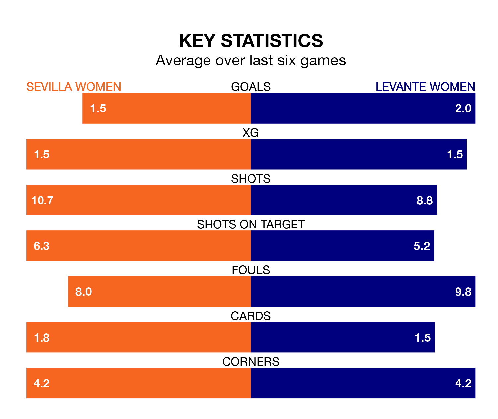

Sevilla Women face a challenge to maintain their high-scoring form at home against a tight Levante Women defence on Saturday.
With 46 goals in 24 games, Sevilla are the fourth-highest scorers in Liga F ahead of the 3pm kick-off at the Estadio Jesús Navas.
They face a Levante side who have scored 43 in 24 matches, but conceded only 22 goals, putting them third among the league's tightest defences – only Barcelona Women and Atletico Madrid Women have conceded fewer goals.
In the last 10 years, Sevilla and Levante have played each other on 15 occasions. Sevilla won two of them, Levante 10, and they drew three times.
On average, Sevilla scored 1.0 goal and Levante 2.4 in those matches.
Their last meeting was on September 17, when Levante won 2-0 at home.
In Cristina Martín-Prieto Gutierrez, Sevilla have one of the league's most on-form strikers so far this season. She has notched 14 goals in 23 appearances, to sit third in the scoring charts.
Levante's top scorers, with 10 goals each, are Gabriela Nunes da Silva and Alba María Redondo Ferrer.
The home side are in mixed form in Liga F, with three wins and three losses from their last six games.
With a win and two draws over that period, the visitors' form is worse – they have taken five points from 18, compared to Sevilla's nine.
Levante are fifth in the table after 24 games, of which they have won 12 and drawn eight, earning 44 points.
Sevilla are two places behind Levante in seventh, with 12 wins and three draws putting them on 39 points.
Sevilla's last match was on Sunday, a 2-1 win against Villarreal Women, with Inma Gabarro and Rosa Otermin Abella getting the goals for Sevilla.
Levante lost 4-2 against Real Madrid Women last time out, on April 20, with Leire Baños Indakoetxea and Nunes da Silva on the scoresheet.
Updated: 07:59 (UTC), 26/04/24